컴퓨터활용능력-2급 (2003-09-28 기출문제)
1과목: 컴퓨터 일반
1. 전원을 끊어도 기억시킨 데이터가 지워지지 않는 비휘발성 메모리로 크기가 작고, 읽고 쓰는 속도가 매우 빨라 디지털 카메라, MP3플레이어 등에 사용하는 메모리는?
- SRAM
- DRAM
- 캐시 메모리
- 플래쉬 메모리
(정답률: 71%)

2. 조직과 조직간에 컴퓨터 통신을 이용하여 필요한 상거래 문서를 표준화된 형식으로 상호 교환하여 업무를 처리하는 방식은?
- 메신저(Messenger)
- 이 메일(E-mail)
- EDI(Electronic Data Interchange)
- VAN(Value Added Network)
(정답률: 60%)
3. 다음 중 컴퓨터 보조 기억장치인 하드디스크의 인터페이스 방식이 아닌 것은?
- IDE
- DMA
- EIDE
- SCSI
(정답률: 63%)
4. 윈도우 98에서 특정 웹사이트로의 접속 과정과 경로(라우팅 경로)를 추적하여 보여주는 프로그램의 명령어와 사용방법이 올바른 것은?
- tracert 211.31.119.151
- trace yahoo.co.kr
- tracert ksy@hanmir.com
- trace 211.31.119.151
(정답률: 55%)
5. 한글 윈도우즈 98에서 배경화면 및 해상도를 바꾸려면 제어판의 어떤 항목에서 작업해야 하는가?
- 시스템
- 내게 필요한 옵션
- 새 하드웨어 추가
- 디스플레이
(정답률: 83%)
6. 30GB(Giga Byte)의 용량을 갖는 하드디스크에는 500MB(Mega Byte) 크기의 파일을 몇 개정도 저장할 수 있는가?
- 6개
- 60개
- 600개
- 6000개
(정답률: 68%)
7. 다음의 확장자 중에서 동영상 파일의 확장자가 아닌 것은?
- mpg
- mov
- jpg
- avi
(정답률: 81%)
8. 다음의 괄호 안에 들어갈 용어로 가장 올바른 것은?
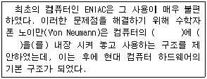
- 기억 장치, 데이터
- 입출력 장치, 프로그램
- 기억 장치, 프로그램
- 입출력 장치, 데이터
(정답률: 58%)
9. 홍길동이 임꺽정으로부터 받은 전자우편 메시지를 그대로 김두한에게 전송하려고 할 때 사용할 수 있는 가장 적절한 기능은?
- 회신(Reply)
- 전체회신(Reply All)
- 전달(Forward)
- 새 메일(New Mail)
(정답률: 82%)
10. 인터넷 주소(IP Address)를 물리적 하드웨어 주소(MAC Address)로 변환하는 프로토콜은?
- DNS
- ARP
- ICMP
- RARP
(정답률: 46%)
11. 탐색기에서 아래의 그림과 같은 기능을 하는 키는 무엇인가?
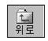
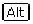
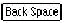
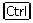
(정답률: 64%)
12. 다음 그림은 작업 표시줄의 등록정보를 나타낸 것이다. 옵션 탭에서 항상 위와 자동 숨김을 선택하였을 경우 작업 표시줄의 특성을 가장 올바르게 설명한 것은?
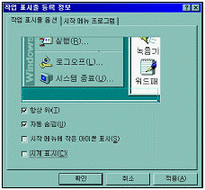
- 전체 화면이 표시된 창에서 작업할 때에도 작업 표시줄이 보인다.
- 작업 표시줄은 전체 화면이 표시된 창에서 작업할 때에는 숨어 있다가 마우스를 작업 표시줄 영역으로 이동하면 나타난다.
- 어떠한 경우에도 화면상에 작업 표시줄이 나타나지 않는다.
- 작업 표시줄이 항상 화면 위에 표시된다.
(정답률: 73%)
13. 다음 중 인터넷의 주소에 대한 설명으로 잘못된 것은?
- 인터넷에 접속된 모든 컴퓨터는 통일된 체계의 주소를 사용한다.
- 문자로 된 도메인 네임(Domain Name) 주소와 숫자로 된 IP 주소가 있다.
- IP 주소는 2바이트로 구성된다.
- 도메인 네임 주소와 IP 주소는 전 세계에서 중복되지 않는 고유한 주소로 사용된다.
(정답률: 60%)
14. ADSL(Asymmetric Digital Subscriber Line) 서비스에 대한 설명 중 가장 옳지 않은 것은?
- 기존의 전화선을 그대로 사용하면서도 고속 데이터 통신이 가능하다. 즉, 한 전화선으로 일반 전화와 데이터 통신을 모두 처리할 수 있다는 것이다.
- 자료의 업로드 속도보다 다운로드 속도가 빠르기 때문에 다운로드와 업로드의 속도가 같은 대칭형 서비스가 아닌 비대칭(Asymmetric)형 서비스라고 한다.
- ADSL은 전화국과 각 가정이 1 : 1로 연결되어 있다.
- ADSL은 이용자가 증가하면 통신 속도가 특히 많이 떨어지는 단점이 있다.
(정답률: 55%)
15. 다음 중 가상 메모리(virtual memory)에 설명으로 올바르지 않은 것은?
- RAM을 흉내내기 위해 디스크 저장 장치를 사용하는 기술이다.
- 가상 메모리를 이용하면 한 번에 여러 개의 프로그램을 수행시킬 수 있다.
- 가상 메모리는 RAM만큼 빠르지는 않다.
- 가상 메모리의 데이터는 RAM과 달리 전원이 꺼져도 소실되지 않는다.
(정답률: 65%)
16. Windows 98의 보조 프로그램중 메모장에 대한 설명으로 가장 옳지 않은 것은?
- 문서의 크기가 64KB 이하인 ASCII 코드 형식의 텍스트 파일을 작성, 편집, 인쇄할 수 있다.
- 메모장의 실행 파일은 C:\Windows\Notepad.exe 파일이다.
- 자동 줄 바꿈, 찾기, 시간/날짜 삽입하는 기능을 제공한다.
- 작성한 문서를 저장할 때 확장자는 자동으로 *.txt가 부여된다.
(정답률: 46%)
17. 키보드의 특수 제어키에 대한 설명 중 가장 거리가 먼 것은?
- Esc : 명령을 취소시키거나 종료할 때 사용한다.
- Shift : 한글문자의 쌍자음, 쌍모음을 입력할 수 있으며 영문인 경우 소문자 입력 상태라면 대문자가 입력이 된다.
- Tab : 스페이스 바를 여러 번 누른 것과 같이 건너뛴다.
- Ctrl/Alt : 다른 키와 조합하여 사용하는 특수키이며, 이 키를 누르면 Ctrl/Alt 문자가 표시된다.
(정답률: 72%)
18. 마이크로소프트 인터넷 익스플로러에서 전에 열어본 페이지에 대한 '쿠키' 정보만을 지우려 할 때는 어떤 방법을 취해야 하는가?
- Windows 폴더에 있는 [Temp] 폴더를 지운다.
- 제어판의 [인터넷옵션] 항목의 [일반] 탭에서 [쿠키 삭제] 버튼을 누른다.
- 제어판의 [폴더옵션] 항목에서 [쿠키 삭제] 아이콘을 클릭한다.
- 제어판의 [프로그램 추가/제거] 항목에서 [쿠키 삭제] 버튼을 누른다.
(정답률: 73%)
19. 다음 동영상 포맷 중 스트림(Stream) 전송이 가능한 포맷으로 가장 거리가 먼 것은?
- ASF
- WMA
- AVI
- RM
(정답률: 33%)
20. 다음 중 한글 윈도우 98의 네트워크 구성 요소 중에서 다른 Microsoft Windows 시스템과 서버에 연결할 수 있고, 파일과 프린터를 공유할 수 있게 하는 요소로 가장 적절한 것은?
- TCP/IP
- Microsoft 네트워크
- 네트워크 어댑터
- NetBEUI
(정답률: 46%)
2과목: 스프레드시트 일반
21. 다음 중 [편집]-[찾기]를 실행하여 ‘찾을 내용’에 문자열 ‘삼?주식회사’와 같이 입력하였을 때의 결과에 대한 설명으로 올바른 것은?
- 삼으로 시작하고 주식회사로 끝나는 모든 데이터를 찾는다.
- [전체 셀 일치]를 설정하면 삼으로 시작하고 주식회사로 끝나는 여섯 문자로 구성된 데이터를 찾는다.
- 삼으로 시작하는 모든 데이터를 찾는다.
- 주식회사로 끝나는 모든 데이터를 찾는다.
(정답률: 70%)
22. 다음 중 계산된 결과 값이 나머지 수식과 다른 것은 어느 것인가?
- =MAX(33, 41, 7, 45, -8)
- =CHOOSE(3, 23, 50, 45, 40, 11)
- =ROUND(44.67, 1)
- =ABS(INT(-44.6))
(정답률: 44%)
23. 아래의 차트에서 구성요소에 대한 설명으로 틀리는 것은?
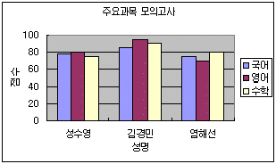
- 차트제목 : 주요과목 모의고사
- 값 축 : 점수
- 항목 축 : 성수영, 김경민, 염해선
- 항목 축 제목 : 성명
(정답률: 65%)
24. 다음 중 화면 제어 방법에 대한 설명으로 옳지 않은 것은?
- 창 나누기는 워크 시트의 내용이 많은 경우 하나의 화면으로는 모두 표시하기 어려울 때 워크시트를 여러 개의 창으로 분리하는 기능으로 화면은 최대 4개로 분할할 수 있다.
- 창 나누기를 위해서는 셀 포인터를 창을 나눌 기준 위치로 옮긴 후 [창]-[나누기]를 클릭하면 셀 포인터의 위치에 따라 화면을 수평/수직으로 분할해 준다.
- 틀 고정은 셀 포인터의 이동에 관계없이 항상 제목 행이나 제목 열을 표시하고자 할 때 설정한다.
- 통합 문서 창을 [창]-[숨기기]를 이용하여 숨긴 채로 엑셀을 종료하면 다음에 파일을 열 때 숨겨진 창에 대해 숨기기 취소를 할 수 없으므로 주의하여야 한다.
(정답률: 64%)
25. 다음 워크시트에서 아래의 [수당기준표]를 이용하여 각 직급별 근속수당을 구하는 수식을 [C2] 셀에 작성한 후 채우기 핸들로 나머지 근속수당을 계산하기 위한 수식으로 올바른 것은?
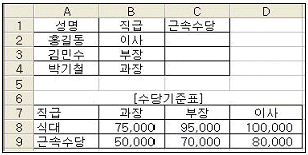
- =VLOOKUP(B2,$B$7:$D$9,2,FALSE)
- =VLOOKUP(B2,$B$7:$D$9,3,FALSE)
- =HLOOKUP(B2,$B$7:$D$9,2,FALSE)
- =HLOOKUP(B2,$B$7:$D$9,3,FALSE)
(정답률: 45%)
26. 다음 중 하나의 필드에 서로 다른 자료 형식이 섞여 있을 경우의 데이터 정렬(오름차순)에 관한 설명으로 올바른 것은?
- 빈 셀, 숫자, 문자, 논리값 순서로 정렬된다.
- 숫자, 문자, 논리값, 빈 셀 순서로 정렬된다.
- 숫자, 문자, 빈 셀, 논리값 순서로 정렬된다.
- 논리값, 숫자, 문자, 빈 셀 순서로 정렬된다.
(정답률: 68%)
27. 다음 중 엑셀에서 주어지는 ‘셀 구분선’ 포함하여 워크시트를 인쇄하고자 할 때의 설정 사항으로 올바른 것은?
- [도구]-[옵션]을 실행하여 [화면 표시] 탭에서 '구분선'을 설정한다.
- [도구]-[옵션]을 실행하여 [화면 표시] 탭에서 '눈금선'을 설정한다.
- [파일]-[페이지 설정]을 실행하여 [시트] 탭에서 '눈금선'을 설정한다.
- [서식]-[시트]에서 '구분선'을 설정한다.
(정답률: 44%)
28. 다음 중 통합문서 파일에서 시트보호를 설정하였을 경우에 대한 설명으로 올바른 것은?
- 보호가 설정되면 통합문서를 불러올 수 없다.
- 해당 워크시트의 모든 셀 내용을 변경할 수 없다.
- 시트를 삽입하거나 삭제할 수 없다.
- 해당 워크시트에서 행이나 열을 삽입하거나 삭제할 수 없다.
(정답률: 42%)
29. 아래의 <표1>의 워크시트에서 계산한 총이자(년)가 원금, 이자율(년), 기간(년)이 <표2>와 같이 각각 변화하는 경우에 대해 어떻게 변하는지를 알아보기 위한 기능으로 적합한 것은?
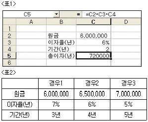
- [도구]-[목표값 찾기]
- [데이터]-[통합]
- [도구]-[시나리오]
- [도구]-[분석]
(정답률: 52%)
30. 다음 중 [A1] 셀에 123.567을 입력한 후 셀 서식을 #,##0.0으로 설정하였을 때 [A1] 셀에 표시되는 결과로 올바른 것은?
- #123.56
- 123.5
- 123.6
- 0,123.0
(정답률: 76%)
31. 다음 중 워크시트의 데이터 입력에 관한 설명으로 옳지 않은 것은?
- 문자열 데이터는 셀의 왼쪽에 정렬된다.
- 수치 데이터는 셀의 오른쪽에 정렬되며 공백과 특수문자를 사용할 수 있다.
- 기본적으로 수식 데이터는 워크시트상에 수식 결과 값이 표시된다.
- 특수 문자입력은 한글자음(ㄱ, ㄴ, ㄷ 등)을 입력한 후 ‘한자’를 누른 다음 나타나는 목록상자에서 원하는 문자를 선택한다.
(정답률: 71%)
32. 다음 중 차트에 관한 설명으로 옳지 않은 것은?
- 차트는 차트영역, 그림영역, 계열, 항목 축, 값 축, 범례, 제목 등의 개체로 구성되어 있다.
- [F11] 키를 누르면 자동적으로 만들어지는 기본형 차트는 2차원 가로 막대형 차트이다.
- 이중 축 혼합형 차트는 세로 막대와 꺾은선 그래프를 함께 표시할 수 있다.
- 계열의 단위가 다르거나, 숫자의 크기가 현저하게 다를 경우에는 이중 축 혼합형 차트를 작성하는 것이 좋다.
(정답률: 68%)
33. 다음 차트에 대한 설명으로 틀린 것은?
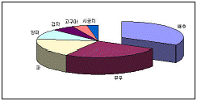
- 3차원 효과의 원형 차트를 나타낸 것이다.
- 데이터 요소인 배추항목을 별도로 분리하려면 배추항목 조각만 선택 후 드래그한다.
- 원형 차트는 각 항목 값의 크기가 전체에 대해서 얼마나 많은 비율을 차지하는지 쉽게 알 수 있다.
- 원형 차트에 표시되는 조각의 위치를 변경할 수 없다.
(정답률: 75%)
34. 다음 중 날짜/시간 데이터를 입력하는 방법에 관한 설명으로 틀린 것은?
- 현재의 날짜를 입력하려면 [Ctrl] + [;] 키를 누른다.
- 현재 시간을 입력하려면 [Ctrl] + [Shift] + [;] 키를 누른다.
- 시간을 입력할 때는 슬래시(/)나 하이픈(-)을 사용한다.
- 서식에 AM이나 PM이 있으면 시간을 12시간제로 나타내는 것이다.
(정답률: 61%)
35. 다음 중 [A1:C3] 영역과 같이 조건을 작성한 후 고급 필터를 실행했을 때, 추출되는 데이터에 관한 설명으로 올바른 것은?
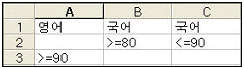
- 영어 점수가 90점 이상이고, 국어 점수가 80점 이상이거나 90점 이하인 데이터
- 영어 점수가 90점 이상이거나, 국어 점수가 80점 이상이고 90점 이하인 데이터
- 영어 점수가 90점 이상이면서, 국어 점수가 80점 이상이고 90점 이하인 데이터
- 영어 점수가 90점 이상이거나, 국어 점수가 80점 이상이거나 90점 이하인 데이터
(정답률: 76%)
36. 아래에 나열된 작업 항목을 부분합을 구하는 작업 순서대로 올바르게 나열한 것은?
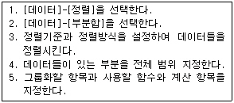
- 1 - 3 - 4 - 2 - 5
- 4 - 2 - 5 - 1 - 3
- 4 - 1 - 3 - 2 - 5
- 4 - 2 - 3 - 5 - 1
(정답률: 60%)
37. 다음 중 [도구]-[매크로]-[새 매크로 기록]을 실행하여 매크로를 기록하는 과정에 대한 설명으로 옳지 않은 것은?
- 매크로 이름의 첫 글자는 반드시 문자이어야 하며 나머지는 문자, 숫자, 밑줄 등을 공백 없이 함께 사용할 수 있다.
- 매크로를 바로 가는 키로 실행하려면 바로 가는 키로 사용할 키보드의 숫자키 (0∼9) 중 하나를 지정하여야 한다.
- 매크로를 실행할 때 현재 셀의 위치를 무시하고 매크로가 셀을 선택하도록 하려면 상대 참조를 기록하도록 매크로 기록기를 설정한다.
- 기록 도구모음이 나타나면 기록할 동작을 수행한 후 기록 도구모음의 기록중지 버튼을 누르면 매크로 작성이 완료된다.
(정답률: 61%)
38. 아래의 시트에서 국어가 80점 이상인 사람의 총점 합계를 구하는 수식으로 옳은 것은?
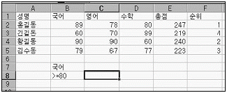
- =DSUM(A2:F5,2,B7:B8)
- =DSUM(A2:F5,5,B7:B8)
- =DSUM(A1:F5,2,B7:B8)
- =DSUM(A1:F5,5,B7:B8)
(정답률: 45%)
39. 다음과 같은 [매크로] 대화 상자를 불러오는 단축키로 올바른 것은?
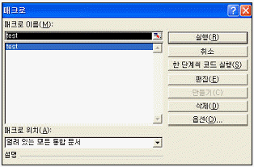
- [Ctrl] + [F8]
- [Ctrl] + [F9]
- [Alt] + [F8]
- [Alt] + [F9]
(정답률: 56%)
40. 다음 중 주어진 수식에 대한 수식의 결과 값이 옳지 않은 것은?
- =RIGHT("Computer",5) -> puter
- =SQRT(5) -> 25
- =TRUNC(5.6) -> 5
- =OR(6<5, 7>5) -> TRUE
(정답률: 53%)